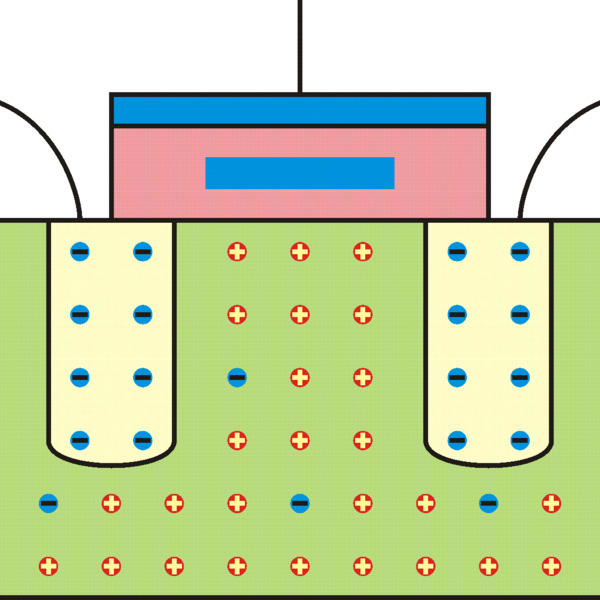

История создания
Создателем первого в мире накопителя на базе флэш-памяти является японский профессор Фудзи Масуока. Первые созданные им в средине 1980 года накопители
обладали объемом в 1 Мб. Главным преимуществом этих накопителей были очень высокая скорость чтения/записи и миниатюрные размеры...

Физическое устройство
Cердцем многих устройств памяти является полевой транзистор с плавающим затвором. Гениальнейшее изобретение 70-х годов 20-го века. Его отличие от обычных полевых транзисторов заключается в том, что между затвором и каналом, прямо в диэлектрике, расположен еще один проводник – который и называют плавающим затвором....
Логическое устройство
Существует несколько типов архитектур флэш-памяти, но наибольшее распространение получили архитектуры:
Разновидности
В современной технике используется огромное количество разновидностей Flash-памяти и SSD:
Интересные факты и рекорды
- Современные флеш карты памяти выдерживают температуру от -30 0С до +80 0С при хранении.
- Если флэшку хранить в холодильнике, то срок хранения информации будет более длительным.
- При использовании в нормальных температурных условиях, гарантированный срок службы флэшки составит 10 лет .
- ...